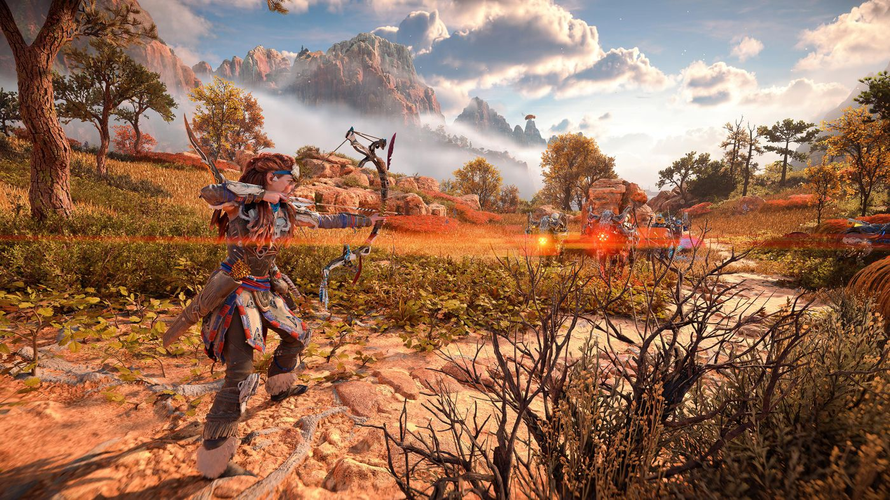

Horizon: Forbidden West
Horizon Forbidden West es un videojuego de rol de acción, aventura y mundo abierto desarrollado por Guerrilla Games y distribuido por Sony Interactive Entertainment, exclusivamente para PlayStation 4 y PlayStation 5. Es la secuela de Horizon Zero Dawn. El juego está protagonizado por Aloy, una joven cazadora de la tribu Nora que viaja al Oeste Prohibido para investigar una misteriosa y mortífera plaga mientras hace frente a otros peligros. Su lanzamiento fue el 18 de febrero de 2022.
El videojuego ha recibido excelentes críticas, destacándose por su historia, los personajes, el combate, el mundo abierto y la exploración. También destacaron su jugabilidad y los aspectos audiovisuales.
Horizon: Forbidden West esta disponible en nuestra tienda para la consola de Playstation 5.
